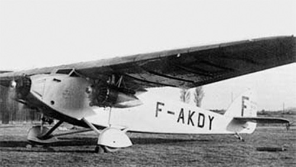

SPCA 218

- Разработчик: SPCA
- Страна: Франция
- Первый полет: 1932
- Тип: Почтовый самолет
В 1932 году фирма Societe Provencale de Construction Aeronautique (SPCA) выпустила модернизированный вариант почтового самолета SPCA 40T. Новый самолет, получивший обозначение SPCA 218, получил три двигателя Salmson 9Nc мощностью 135 л.с., благодаря которым его практическая дальность возросла почти в двое и составила 1075 километров. Было выпущено два экземпляра самолета, использовавшихся в основном на авиалиниях в Африке. Так летом 1935 года оба SPCA 218 участвовали в перелете Алжир - Браззавиль, организованном компанией Regie Air Afrique.
| Летно технические характеристики | |
|---|---|
| Модификация | SPCA 218 |
| Размах крыла максимальный, м | 20.00 |
| Длина, м | 13.18 |
| Высота, м | 4.19 |
| Площадь крыла, м2 | 55.00 |
| Масса, кг | |
| - пустого самолета | 2249 |
| - нормальная взлетная | 3350 |
| Тип двигателя | 3 ПД Salmson 9Nc |
| Мощность, л.с. | 3 х 135 |
| Максимальная скорость у земли, км/ч | 180 |
| Практическая дальность, км | 1075 |
| Практический потолок, м | 5960 |
| Экипаж, чел | 2 |
| Полезная нагрузка: | груз почты |